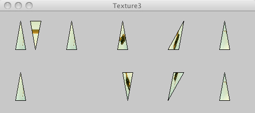

This page tests PJS textures

/* @pjs preload="berlin-1.jpg" */
import processing.opengl.*;
size(500, 200, P3D);
background(200);
PImage img = loadImage("berlin-1.jpg");
textureMode(NORMALIZED);
beginShape(TRIANGLES);
texture(img);
vertex(30, 75, 0, 0, 0);
vertex(40, 20, 0, 0, 1);
vertex(50, 75, 0, 1, 0);
vertex(60, 20, 0, 1, 1);
vertex(70, 75, 0, 0, 1);
vertex(80, 20, 0, 1, 1);
endShape();
beginShape(TRIANGLES);
texture(img);
vertex(130, 75, 0, 0, 0);
vertex(140, 20, 0, 0, 1);
vertex(150, 75, 0, 1, 0);
vertex(160, 20, 0, 0, 0);
vertex(170, 75, 0, 0, 1);
endShape();
beginShape(TRIANGLES);
texture(img);
vertex(230, 75, 0, 1, 1);
vertex(240, 20, 0, 0, 1);
vertex(250, 75, 0, 1, 0);
vertex(270, 75, 0, 0, 0);
vertex(280, 20, 0, 0, 1);
endShape();
beginShape(TRIANGLES);
texture(img);
vertex(330, 75, 0, 0, 1);
vertex(350, 75, 0, 1, 0);
vertex(360, 20, 0, 1, 1);
vertex(370, 75, 0, 0, 1);
vertex(380, 20, 0, 0, 0);
endShape();
beginShape(TRIANGLES);
texture(img);
vertex(430, 75, 0, 0, 0);
vertex(440, 20, 0, 1, 0);
vertex(450, 75, 0, 0, 1);
vertex(460, 20, 0, 1, 1);
endShape();
beginShape(TRIANGLES);
texture(img);
vertex(30, 175, 0, 0, 0);
vertex(40, 120, 0, 0, 1);
vertex(50, 175, 0, 1, 0);
endShape();
beginShape(TRIANGLES);
texture(img);
vertex(130, 175, 0, 1, 1);
vertex(140, 120, 0, 0, 0);
endShape();
beginShape(TRIANGLES);
texture(img);
vertex(240, 120, 0, 1, 1);
vertex(250, 175, 0, 1, 0);
vertex(260, 120, 0, 0, 1);
vertex(270, 175, 0, 0, 0);
vertex(280, 120, 0, 1, 0);
endShape();
beginShape(TRIANGLES);
texture(img);
vertex(330, 175, 0, 1, 0);
vertex(340, 120, 0, 1, 1);
vertex(360, 120, 0, 0, 0);
vertex(370, 175, 0, 0, 0);
vertex(380, 120, 0, 0, 1);
endShape();
beginShape(TRIANGLES);
texture(img);
vertex(430, 175, 0, 0, 0);
vertex(440, 120, 0, 1, 0);
vertex(450, 175, 0, 0, 1);
vertex(460, 120, 0, 1, 1);
vertex(480, 120, 0, 1, 0);
endShape();